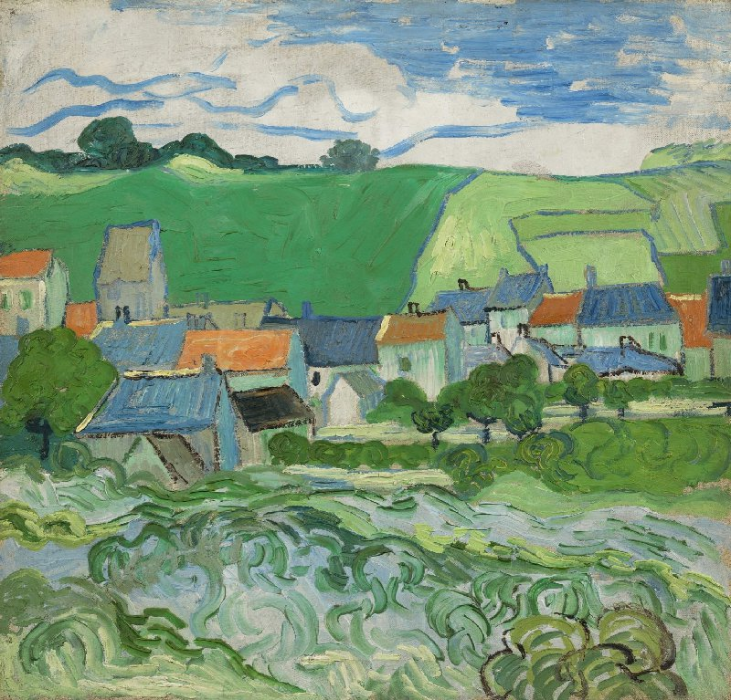

View of Auvers-sur-Oise
View of Auvers-sur-Oise was painted with oil on canvas by Vincent van Gogh in May - June 1890, shortly before his death, while he was living in Auvers-sur-Oise, France. This landscape captures the peaceful countryside with rolling fields, cottages, and a dramatic sky, painted with Van Gogh’s signature swirling brushstrokes. Using a bright yet somewhat subdued color palette, the work reflects both his admiration for nature and his emotional turmoil.
Back to Paintings